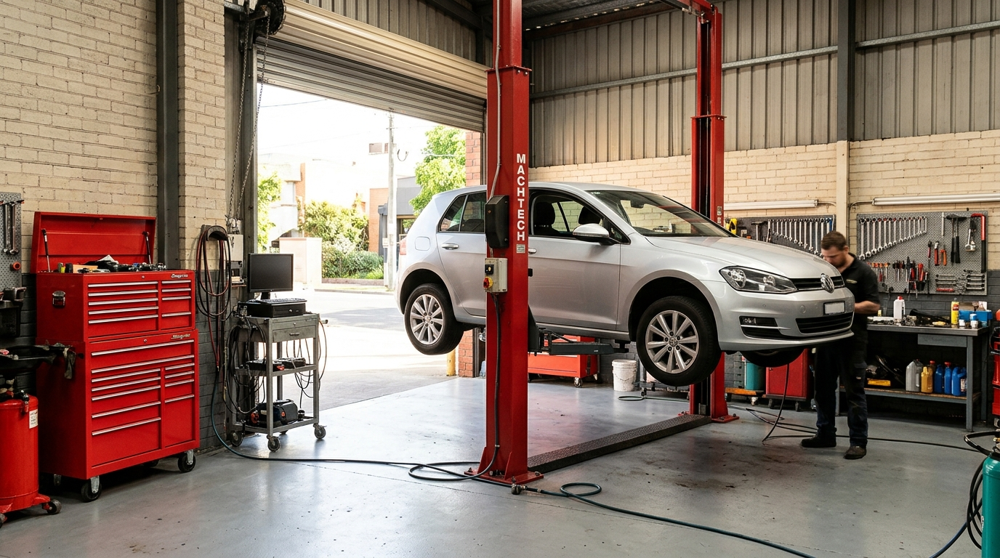

Book your drop-off
Call (03) 9388 1375 to confirm workshop hours and lock in a time for your RWC inspection or mechanical service.
13 Hope St, Brunswick VIC 3056 · Inner North
Honest mechanical servicing, fault diagnostics, brakes, and Roadworthy Certificates (RWC) at our Hope Street workshop—serving Brunswick and Melbourne's Inner North.

Practical repairs, scheduled maintenance, and roadworthy inspections for daily drivers across Brunswick, Coburg, and Fitzroy North.
Comprehensive safety inspections for vehicle sales, ownership transfers, and re-registration—checking brakes, tyres, steering, suspension, windscreen, lights, and structure.
Scheduled maintenance, engine oil and filter changes, fluid checks, and multi-point mechanical inspections for all makes and models.
Pad and rotor replacements, brake fluid flushes, shock absorbers, bushings, and steering component repairs for safe handling.
OBD fault-code scanning, check-engine light troubleshooting, cooling system repairs, and reliable drivability fixes.
Independent hoist inspection and roadworthiness check before you buy a used car—helping you avoid hidden mechanical surprises.
Battery load testing and replacement, starter motor and alternator repairs, and lighting or electrical fault tracing.
Direct communication with the workshop—no call centres, no surprise add-ons.
Call (03) 9388 1375 to confirm workshop hours and lock in a time for your RWC inspection or mechanical service.
We inspect your vehicle on the hoist, explain what needs attention in plain English, and confirm pricing before starting repair work.
Pick up your vehicle from 13 Hope Street with straightforward paperwork and dependable workmanship.
Locally listed on Google Maps, LocalSearch, and TrueLocal—serving Inner North motorists from our Hope Street workshop.
Read reviews on Google MapsDrop in or call ahead to confirm availability for RWC inspections and servicing.